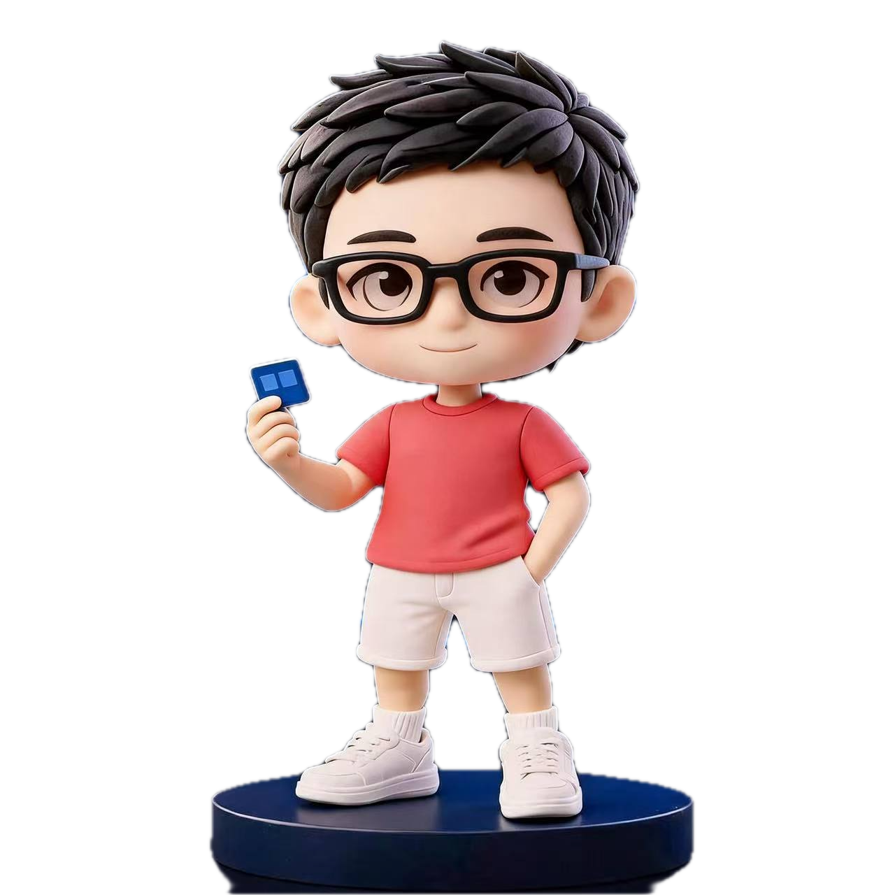

Full project
Full project
Design system · Research
Color System
Methodology
A scalable semantic color framework built from perceptual foundations, accessibility constraints, and real interface states.
I turn complex product intent into precise interfaces—from early insight to final interaction.

Design should reduce the distance between intention and action.
Two focused studies in systems, visual language, and interaction. Each project is framed through the decisions behind it.
Full project
Design system · Research
A scalable semantic color framework built from perceptual foundations, accessibility constraints, and real interface states.
 Full project
Full project
Brand experience · Motion
A flexible visual language that gives a static identity rhythm, depth, and continuity across digital surfaces.
Color System Methodology
The project connects perceptual color models, accessibility constraints, semantic roles, and component states into one maintainable system.
Brand in Motion
A motion-led identity exploration built around rhythm, depth, and recognizable blue light—adaptable across campaign and product surfaces.
How I work
Find the real friction through research, constraints, and product context.
Turn scattered inputs into a focused model the team can act on.
Make interaction tangible early and use feedback to sharpen the direction.
Carry the decision into reusable patterns, states, and implementation detail.
Profile
I’m Edwiin, a UI/UX designer focused on turning complex requirements into coherent systems and polished product experiences.
I work across research, interaction, visual design, and design systems—with close attention to the details that make a product feel intentional.
Start a conversationUI/UX Design
Product thinking
Design systems
Research & synthesis
Interaction design
Visual direction
Prototyping
Have a role where thoughtful design matters?
Let’s make it clear.theedwiin@gmail.com